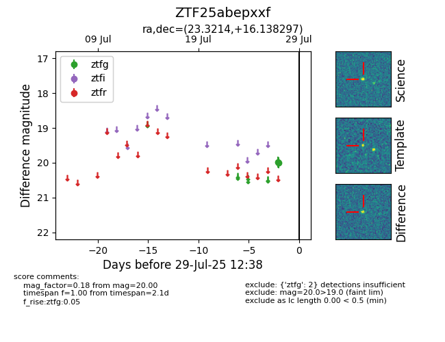

Target ZTF25abepxxf at 2025-07-29 12:38, see:
FINK: fink-portal.org/ZTF25abepxxf
Lasair: lasair-ztf.lsst.ac.uk/objects/ZTF25abepxxf
ALeRCE: alerce.online/object/ZTF25abepxxf
alt names
ZTF25abepxxf (ztf,fink)
coordinates:
equatorial (ra, dec) = (23.3214,+16.13830)
galactic (l, b) = (137.3571,-45.55809)
photometry
last ztfg=20.00
2 ztfg detections
